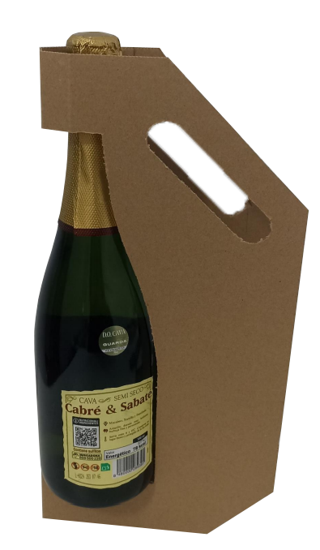
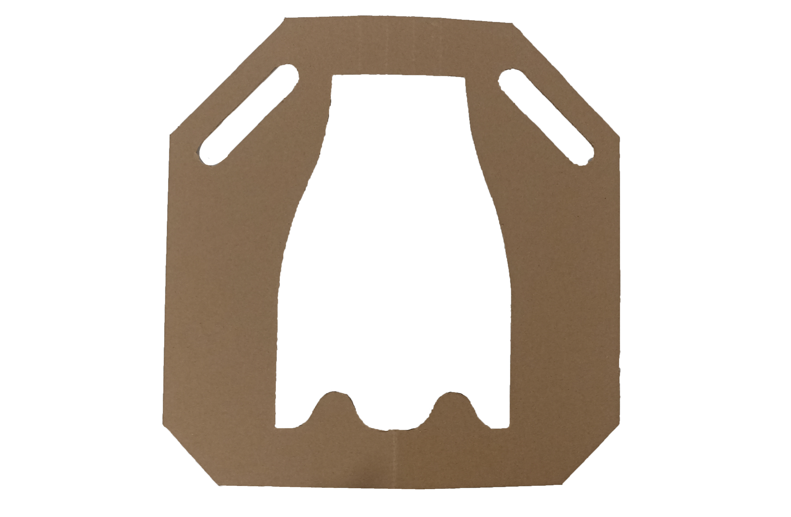

Wine Bottle Carrier
A simple solution to accompany your drink.
This cardboard wine-holder takes advantage of the two main balance spots of a glass bottle - the neck and the bottom - to offer a comfortable way of carrying a wine bottle either on the way home, or as a gift.


Easy storage and stackability
The design lays completely flat when not in use.

Minimalistic look
A minimal amount of cardboard is used for this holder, and the entire bottle is visible when in use.